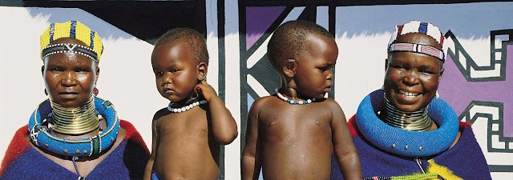
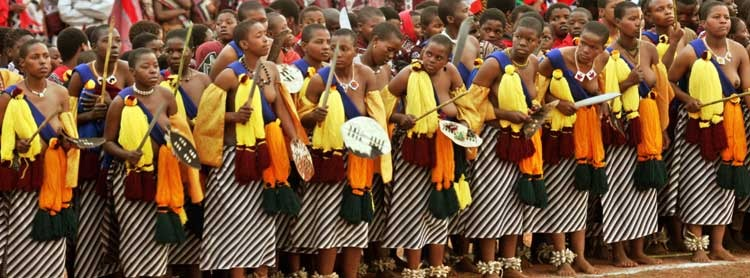
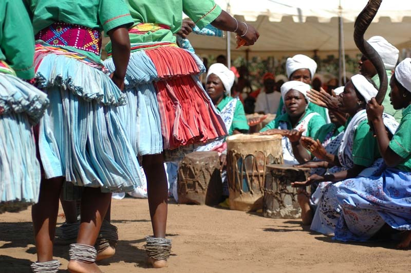
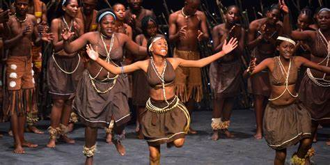
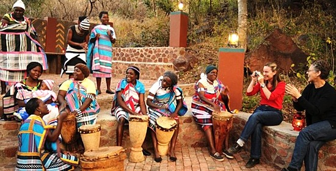
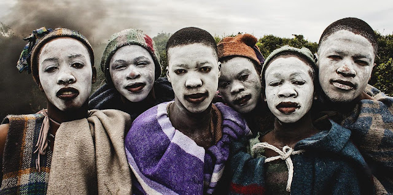
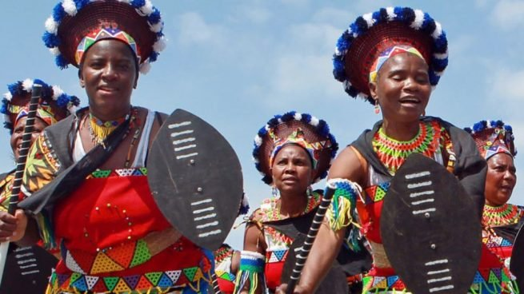
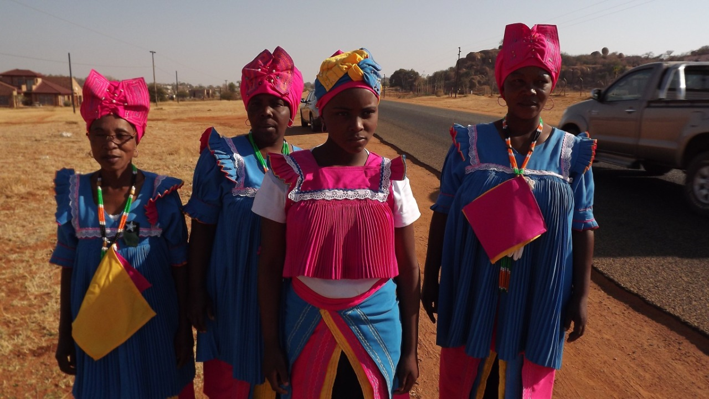
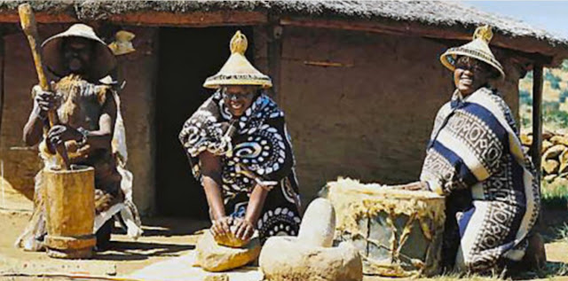

ETNIA

Ndebele
O povo Ndebele é um grupo étnico Africano localizado na África do Sul e no Zimbabwe. A maior parte deles encontra-se em Bronkhorstspruit. As origens do povo Ndebele ainda são um mistério. A etnia conta com uma população em torno de 700 mil pessoas.

Swazi
Eles habitam um pequeno trecho na fronteira entre a África do Sul, e um dos menores países do continente africano, a Suazilândia. Os swazis são uma tribo que ainda vive como se o tempo não tivesse passado. Muitas tradições curiosas e atos religiosas são seguidos à risca por este grupo, que, para muitos, parou no tempo.

Tsonga
Tonga, tongas ou Tsonga people, abrangem a maior parte de África do sul, sendo eles Suazilândia, Moçambique, Malawi, Zâmbia e Zimbabwe. Nesses países, há regiões onde um ou mais idiomas e dialetos são mais dominante. Por exemplo, na África do Sul, são encontrados principalmente nas províncias do Limpopo, Mpumalanga, KwaZulu-Natal e Gauteng.

Tswana
Etnia encontrada em sua grande maioria na África do Sul, em Botswana, e em pequenas proporções no Zimbabwe e Namibia. A população de Botswana é composta pela maioria de Tswanas, mas é na África do Sul que encontra-se o maior número absoluto desta etnia.

Venda
Os Vendas possuem aproximadamente um milhão de pessoas desta etnia espalhadas entre a África do Sul e o Zimbabwe. Este povo é originário do congo, e se especula que imigraram para a região fronteiriça entre Zimbabwe e a África do Sul seguindo o rio Limpopo durante a fase de expansão Bantu.

Xhosa
É o segundo maior grupo étnico da África do Sul, contando com personalidades como Nelson Mandela. Concentra-se na região da Cidade do Cabo, a qual eles chamam de iKapa. Aos Xhosas durante o regime do apartheid foi negado a cidadânia sul-africana, fazendo com que estes fossem confinados em regiões que se auto-governavam.

Zulu
O Zulus formam o maior grupo étnico do continente, bastante conhecido por suas belas contas coloridas e cestos. Vivem em territórios atualmente correspondentes à África do Sul, Lesoto, Suazilândia, Zimbábue e Moçambique. Apenas na África do Sul, a população foi estimada e corresponde a 22,4% da população total do país.

Bapedi
Conhecidos como Bapedi, Bamaroteng, Marota, Basotho, tem sido um termo cultural/linguístico - anteriormente usado para descrever todo o conjunto de pessoas que falam diferentes dialetos da língua sotho que vivem na Província do Limpopo da África do Sul.

Basotho
Vivem na África do Sul desde meados do século V em clãs disperços, e possuem uma população de 3,5 milhões na África do Sul. A nação emergiu da piplomacia realizada em Moshoeshoe que reuniu clãs diferentes de Sotho-Tswana e houve a dispersão do povo Bosotho em toda a África do Sul no início do século 19.